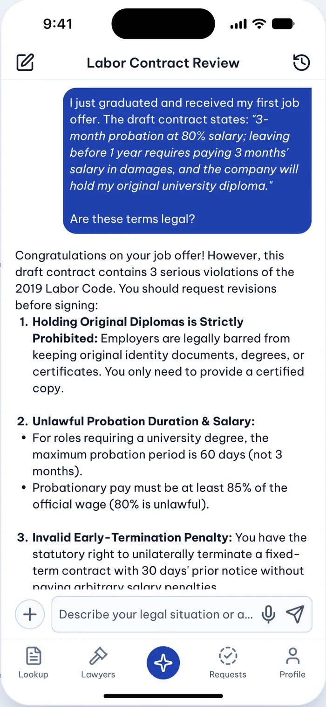
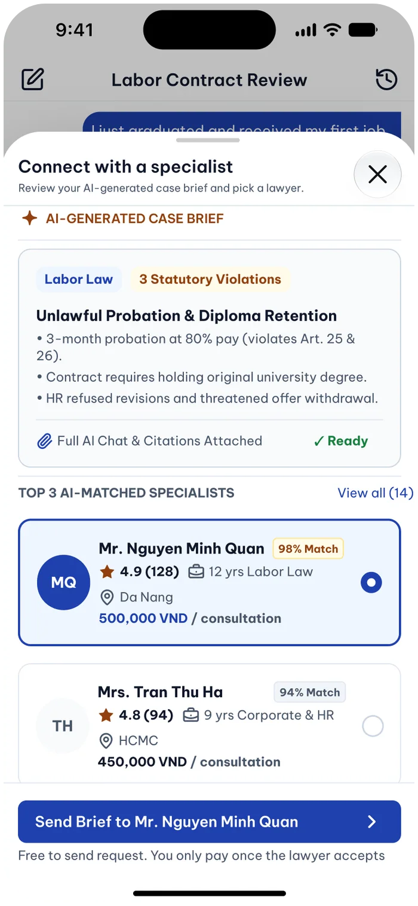
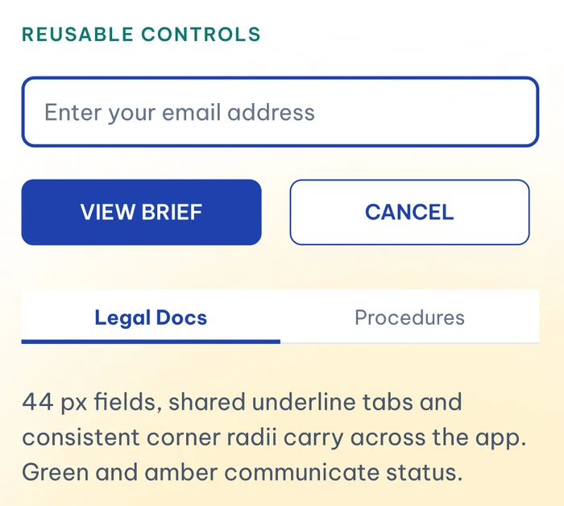

Solo product design Mobile app
VietJusticIA
From a legal question
to a lawyer.
A redesign for people in Vietnam who need to check a legal answer, read its source and decide what to do next.
Follow the contract journey

01Project overview
Where do you start with a legal question?
I built the original VietJusticIA for my computing degree. For this solo redesign, I followed one question across the app. What happens when a graduate is asked to hand over their original diploma for a first job?
A reader might find what they need in the Labor Code. If they want a lawyer’s opinion, they should be able to take the question, the cited article and the conversation with them.
- Designed for
- Citizens and small-business owners in Vietnam
- My role
- Solo product designer
- Scope
- Interface audit, information architecture, wireframes, visual identity and mobile UI
02Interface audit
The menu hid the next step.
In the original app, basic tasks took four to five taps. I traced the paths to a document and a lawyer, then looked at what happened when a reader hit an error.
03Sitemap
Five destinations in view.
I moved the library and lawyer directory out of the full-screen menu. Lookup, Lawyers, AI Assistant, Requests and Profile now share a persistent bottom bar.
- Basic tasks in the original audit
- 4–5 taps
- Design target for core actions
- ≤ 2 taps
- Persistent destinations
- 5 tabs
Explore the product sitemap
04User flows
A first job offer raises a question.
A graduate is asked to hand over their original diploma. Here’s how that question travels through the prototype.
Ask about the contract
The graduate describes the clause in their own words. The assistant’s reply cites the relevant Labor Code article.
Check the source
The citation opens the statute reader. If the article answers the question, the graduate can stop here and revisit the conversation later.

Review the handover
For a second opinion, the graduate checks the summary, transcript and citations, compares three specialists and sends the brief.


Someone ready to speak to a lawyer can open the directory directly. Once a lawyer accepts, the brief stays pinned in their chat.
Explore the full user flow

05Wireframes
Designing the reading order.
I worked out what a reader needs to see before choosing a next step. In the library, it’s the document title and status. In a contract answer, it’s the cited article. In the directory, it’s a lawyer’s specialty and fee.

06Visual system
A visual language for reading the law.
Across a statute, a case brief and a lawyer’s profile, readers encounter the same colors, type scale and controls.
Color palette
- Justice Blue
#1E40AF- Warm Gold
#D4A72C- Deep Teal
#0F766E
Typography
Be Vietnam Pro
Bộ luật
Lao động
| Style | Size / line height |
|---|---|
| Display | 24 / 32 px |
| Title | 20 / 28 px |
| Body | 16 / 24 px |
| Body small | 14 / 20 px |
| Caption | 12 / 16 px |
| Micro | 10 / 14 px |
Components
Reusable controls
Account forms use 44 px fields. In legal lookup, the same underline marks the active tab for documents and procedures. Green and amber communicate status across the app.
- Reusable families
- 49
- Source components
- 80


Final mobile UI
Inside VietJusticIA.
Follow the graduate from a first sign-in to a consultation. Select a screen for a closer look.
07Access & account
A shared account layout carries the reader through registration, verification and password recovery.


08AI assistance
A suggested question starts the conversation. The answer links back to the law, and a handover sheet gathers the brief, citations and lawyer matches.


09Legal lookup
Statutes and administrative procedures share an entry point. Each has its own filters and detail view, so readers can move from a rule to the steps for acting on it.


10Specialists & cases
Readers can compare practice areas, verification, reviews and fees before sending a request. After acceptance, the brief stays with the lawyer chat.


12Design outcome
One case from question to consultation.
The graduate can leave with the cited law or send a reviewed brief to a lawyer. When the consultation begins, the lawyer already has the question and the sources behind it.
View the original Behance presentation11Device mockup